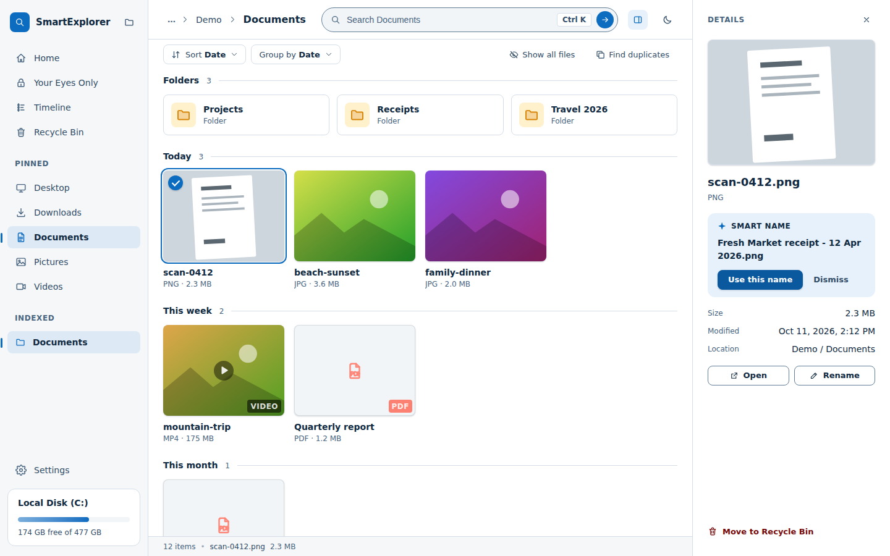
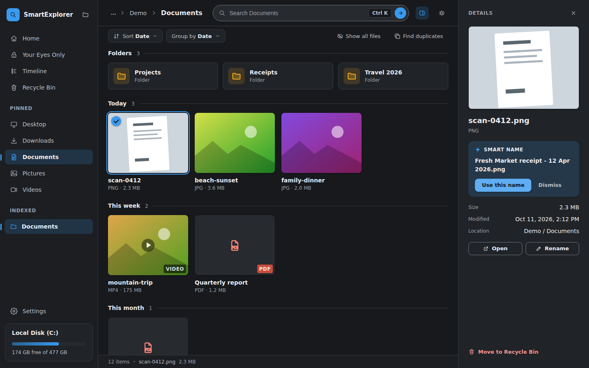
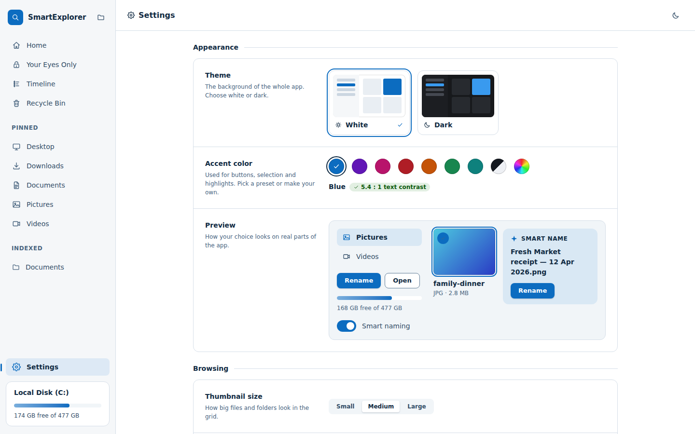

A file explorer that understands what is inside your files
Type what you remember, like “PDFs that mention the Johnson contract” or “a picture of a bag”, and get the matching files, even when the name says nothing. The reading, text recognition and image understanding all happen on your own computer.
Free and open source (MIT). No account. No files leave your PC.

Search the way you remember
One search bar covers names, the words inside documents, the text in photos and scans, and what a picture shows.
Everything you need to find, tidy and protect your files
Familiar to use, with the missing parts added.
Search inside files
Words in PDFs, Word documents and text files, plus text read out of screenshots and scans with OCR.
Search by what a photo shows
Type “bike” and find bikes, even when the file is called IMG_6154. Works on ordinary PCs.
Smart naming
Suggests a readable name from the words found inside a file. One click to accept, one to dismiss.
Duplicate finder
Exact copies, look-alike photos and near-identical documents saved in different formats. You decide what to delete.
Your Eyes Only vault
Send any file or folder into AES-256 encrypted storage yourself. Nothing is ever moved there automatically, and opening one asks for your password again.
Timeline and Memories
Every file, newest first, plus gentle reminders about folders you have not touched in years.
Recycle Bin screen
See what you deleted, restore it to its original place, or delete just some of it permanently.
Convert, keep the original
PDF to Word or text, photo to PDF, CSV to Excel. Always saved as a new file beside the original.
Make it yours
White or dark theme, any accent colour, and your choice of thumbnail size, with text that always stays readable.
Light, dark, and your colour
Pick white or dark and an accent in Settings. The app checks contrast so button text stays easy to read.


Private by design
Your files are the most personal data on your computer. SmartExplorer reads them where they are and keeps its index in a small database next to the folder. Nothing is uploaded, and searches cost nothing and work offline. A one-time model download is needed the first time you use picture search.
Compared with a standard file explorer
“Standard” means Windows File Explorer with its built-in search.
| Capability | Standard explorer | SmartExplorer |
|---|---|---|
| Words inside files | Depends on indexing settings and file type | PDFs, Word and text files, ranked by how much of your query they match |
| Text inside photos and scans | Not part of standard indexing | OCR makes screenshots and scans searchable |
| Find by what a photo shows | Only on Copilot+ PCs with a 40+ TOPS NPU | Works on ordinary Windows PCs |
| Suggested file names | No | Yes, from the text inside the file |
| Duplicates | None built in | Exact, look-alike photos and near-identical documents |
| Sensitive files | Left where they are | Locked in an encrypted vault when you choose |
Download SmartExplorer
Windows installer, free. The Python engine and the image-search model are bundled, so there is nothing else to install and nothing to download later.
The download opens the GitHub Releases page, where the installer and its checksum are listed.
- Works onWindows, 64-bit
- PriceFree, MIT licence
- SizeUnder 1 GB to download
- VerifyCompare the SHA-256 checksum on the release page with
certutil -hashfile SmartExplorer-Setup-.exe SHA256
Questions
Does it upload my files anywhere?
No. Indexing, text recognition and image understanding run on your PC. The only internet use is a one-time download of the image model the first time you use search by picture.
Why is the download so large?
The installer includes its own Python engine and the libraries that read and understand your files, so you do not have to install anything yourself. The image-search model is included too, so search works offline and your files can start indexing the moment you open the app. Local AI apps usually pay this size cost.
Is it safe to run an unsigned installer?
Windows warns about any program from a publisher it does not recognise. You can check the file against the SHA-256 checksum published on the release page, and the full source code is on GitHub for anyone to read.
Does it work on Mac or Linux?
Not yet. This is a Windows-first release. The pieces are cross-platform, so a Mac build is planned.
Why did it not find text in my scanned image?
Reading text from images uses the Tesseract OCR engine. If it is not available in your install, SmartExplorer tells you so instead of guessing.
Is it finished?
It is an early release. It has been tested mainly on the builder’s own library, and the newest interface still needs wider testing on real Windows machines. Bug reports are welcome on GitHub.